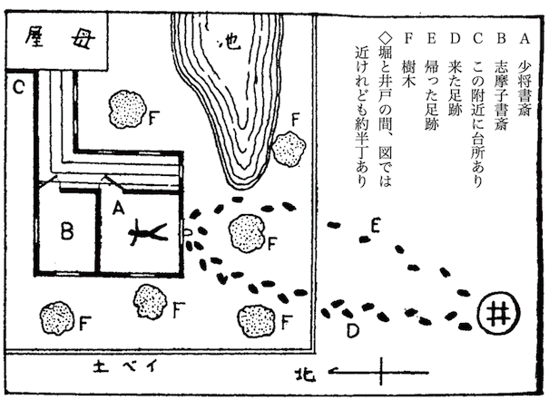

［＃ページの左右中央］
作者の言葉
犯人は最初から読者の目の前にいながら最後までどれが犯人だか分らない。と云うのが所謂本格探偵小説の一つの条件みたいになっています。なるべくその条件に適わせることを心掛けました。敏感な読者は四五回も読まぬ内に犯人が分ってしまうかも知れません。又探偵小説に不慣れな読者には、最後までそれが分らないかも知れません。丁度その辺の所を狙ってある訳です。知識的遊戯として、謎々を解く気持でお読み下されば結構です。
犯人は最初から読者の目の前にいながら最後までどれが犯人だか分らない。と云うのが所謂本格探偵小説の一つの条件みたいになっています。なるべくその条件に適わせることを心掛けました。敏感な読者は四五回も読まぬ内に犯人が分ってしまうかも知れません。又探偵小説に不慣れな読者には、最後までそれが分らないかも知れません。丁度その辺の所を狙ってある訳です。知識的遊戯として、謎々を解く気持でお読み下されば結構です。
「時事新報（夕刊）」昭和四年十一月十九日、二十四日
［＃改ページ］
「この話はあなたが小説にお書きなさるのが当然です。
ある人が私にその話をしたあとで、こんなことを云った。四五年以前の出来事だけれど、事件の主人公が現存していたので
私はそれを聞いて、
以下「私」とあるのは、この話を私に聞かせてくれた「ある人」を指す訳である。
ある夏のこと、私は
弘一君は陸軍省軍務局に重要な地位を占めている、結城少将の息子で、父の
三人はその年大学を出たばかりの同窓であった。結城君は英文科、私と甲田君とは経済科であったが、高等学校時代同じ部屋に寝たことがあるので、科は違っても、非常に親しい遊び仲間であった。
私達には、
弘一君は一人息子なので、広い邸を
私達は天気さえよければ海岸で遊んだ。結城邸は由井ヶ浜と
私達は又、海にあきると、結城邸の池で
実に自由で、明るくて、のびやかな日々であった。だが不幸という魔物は、どんな明るい所へでも、明るければ明るい程、それをねたんで、突拍子もなくやって来るものである。
ある日少将邸に時ならぬ銃声が響いた。この物語はその銃声を合図に、幕があくのである。
ある晩、主人の少将の誕生
宴は別状なく終って、十時頃には客は大抵帰ってしまい、主人側の人達と二三の客が、夏の夜の興を
主人少将は北川老人と碁を囲み、他の人々は志摩子さんをせびって、又ヴァイオリンを弾かせていた。
「サア、僕は又これから仕事だ」
ヴァイオリンの切目に、弘一君が私にそう断って座を立った。仕事というのは、当時彼はある地方新聞の小説を引受けていて、毎晩十時になると、それを書く
階段をおりて、廊下を通って、弘一君が洋館に着いたと思われる時分、突然何かを叩きつける様な物音が、私達をビクッとさせた。あとで考えると、それが問題のピストルの音だったのである。
「何だろう」
と思っている所へ、洋館の方からけたたましい
「誰か来て下さい。大変です。弘一君が大変です」
先程から座にいなかった、甲田伸太郎君の声であった。
その時一座の人々が、誰がどんな表情をしたか記憶がない。一同総立ちになって、
洋館へ行って見ると、少将の書斎の中に（後に見取図を掲げる）弘一君が血に染って倒れ、
「どうしたんだ」
父将軍が不必要に大きな、まるで号令をかける様な声で怒鳴った。
「あすこから、あすこから」
甲田君が、激動の為に口も利けないという風で、庭に面した南側のガラス窓を
見るとガラス戸は一杯に開かれ、ガラスの一部にポッカリと不規則な円形の穴があいている。何者かが、外部からガラスを切って留め金をはずし、窓をあけて忍び込んだのであろう。現に
母夫人は倒れている弘一君にはせ寄り、私は開いた窓の所へ駈けつけた。だが、窓の外には何者の影もなかった。無論
その同じ瞬間に、父少将は、どうしたかというと、彼は不思議なことに息子の傷を見ようともせず、先ず第一に、部屋の隅にあった小金庫の前へ飛んで行って、文字盤を合わせて、扉を開き、その中を
やがて、少将の云いつけで、書生が警察と病院へ電話をかけた。
母夫人は気を失った結城君の身体にすがって、オロオロ声で名を呼んでいた。私はハンケチを出して、出血を止める為に、弘一君の足をしばってやった。弾丸が足首をむごたらしく射抜いていたのだ。志摩子さんは気を利かして、台所からコップに水を入れて持って来た。だが、妙なことには、彼女は夫人の様には悲しんでいない。
それは結城家の下男の、
そうこうする内に、医者がやって来る。間もなく鎌倉の警察署から、司法主任の
弘一君は母夫人と志摩子さんが附添って、
取調の結果、この兇行は
大きな事務デスクの
同じデスクの上に、少将の大型の札入れが投出してあった。不思議なことに、中には数枚の百円紙幣が這入っていたのだが、それには少しも手をつけた跡がない。
では何が盗まれたかというと、実に奇妙な盗賊である。先ずデスクの上に（しかも札入れのすぐ側に）置いてあった、小型の金製置時計、それから同じ机の上の、金の万年ペン、
これが盗難品の全部なのだ。いくら検べて見ても、外になくなった品はない。金庫の中も別状はなかった。
つまり、
「気違いかも知れませんな。黄金
波多野警部が妙な顔をして云った。
実に変な泥棒であった。数百円在中の札入れをそのままにして置いて、それ程の値打もない万年筆や懐中時計に執着したという、賊の気持が理解出来なかった。
警部は少将に、それらの金製品の
だが、少将は別にそういう心当りもないと答えた。ただ、金製万年筆は、彼がある師団の聯隊長を勤めていた頃、同じ隊に属していられた、高貴のお方から拝領したもので、少将に取っては金銭に替え難い値打ちがあったのと、金製置時計は、二寸四方位の小さなものだけれど、洋行記念に親しく
さて波多野警部は室内から屋外へと、順序を追って、綿密な
あとで分ったことだが、この司法主任は、犯罪捜査学の信者で、科学的綿密ということを最上のモットウとしている、風変りな警官であった。彼がまだ片田舎の平刑事であった時分、地上にこぼれていた一滴の
こんな風な綿密周到によって地位を作った人丈けに、彼の取調べには毛筋程の隙もなく、検事でも予審判事でも、彼の報告とあれば全然信用がおけるのであった。
ところが、その綿密警部の綿密周到な捜査にも
窓ガラスは最初想像した通り、掛金をはずす為に、賊がガラス切りと吸盤とを使って、丸く切り抜いたものであった。指紋の方はその係りのものが来るのを待つことにして、警部は用意の懐中電燈で窓の外の地面を照して見た。
「女みたいに
そこで、警部は部下に靴を持って来させて、それを穿くと、不作法ながら窓をまたいで外の地面に降り、懐中電燈をたよりに、靴足袋のあとをたどって行った。
それを見ると、人一倍好奇心の強い私は、邪魔になるとは知りながら、もうじっとしてはいられず、いきなり日本座敷の縁側から廻って警部のあとを追ったものである。無論賊の足跡を見る
ところが行って見ると足跡検分の邪魔者は私一人でないことが分った。もうちゃんと先客がある。やはり誕生祝に呼ばれていた
赤井さんがどういう素性の人だか、結城家とどんな関係があるのか、私は何も知らなんだ。弘一君さえハッキリしたことは知らぬらしい。二十七八の、頭の毛をモジャモジャさせた
彼はよく結城家へ碁をうちに来た。そして、いつも
だが、私はある偶然のことから、この人が探偵好きであることを知っていた。私が結城家に泊り込んだ二日目であったか、赤井さんと弘一君とが、今度事件の起った書斎で話している所へ
彼等は内外の名探偵について論じあっているらしかった。ヴィドック以来の実際の探偵や、デュパン以来の小説上の探偵が話題に上った。又弘一君はそこにあった「明智小五郎探偵談」という書物を指さして、この男はいやに理屈っぽいばかりだとけなした。赤井さんもしきりに同感していた。彼等はいずれ劣らぬ探偵通で、その方では非常に話が合うらしかった。
そう云う赤井さんが、この犯罪事件に興味を持ち、私の先を越して、足跡を見に来たのは誠に無理もないことである。
余談はさて置き、波多野司法主任は、
「足跡を踏まぬ様に気をつけて下さい」
と、二人の邪魔者に注意をしながら、無言で足跡を調べて行った。賊が低い土塀を乗り越えて逃げたらしいことが分ると、土塀の外を調べる前に、一度洋館の方へ
それから私達三人は裏木戸を開けて、塀の外に廻ったが、その
ところが懐中電燈を振り振り、空地を半丁程も進んだ時である。波多野氏は突然立止って、当惑した様に叫んだ。
「オヤオヤ、犯人は井戸の中へ飛込んだのかしら」
私は警部の突飛な言葉に、あっけにとられたが、よく調べて見ると、成程彼の云うのが
それは、
賊が井戸から現われて、又井戸の中へ消えたなどとは、
「こう暗くては、
波多野氏はブツブツと独り言を云いながら、邸の方へ引返した。
それから、裁判所の一行の来着を待つ間に勤勉な波多野氏は、邸内の人々の陳述を聞き取り、現場の見取図を作製した。
彼は用意周到にいつも携帯している
だが、警部のこの努力は決して無駄ではなかった。

当時の警部の見取図を真似て、読者諸君の為にここにこれを掲げて置く。これは事件が解決したあとで、結果から割出して私が作った図であるから警部のほど正確ではないが、その代り、事件解決に重大な関係のあった点は、間違いなく、
後に至って分ることだが、この図面は、犯罪事件について、存外色々なことを物語っているのである。ごく
だが、これは一例に過ぎないのだ。この足跡の図にはもっと別の意味がある。又負傷者の位置その他二三の点について、後に重大な意味を生じて来る部分がある。私は順序を追って話す為に、ここではその点に言及しないが、読者諸君は、よくよくこの図を記憶に留めて置いて頂き
次に邸内の人々の取調について一言すると、第一に質問を受けたのは、兇行の最初の目撃者甲田伸太郎君であった。
彼は弘一君よりも二十分ばかり前に母屋の二階を降りて、階下の手洗所に這入り、用を済ませてからも玄関に出て、酒にほてった頬を冷していたが、もう一度二階の宴席へ戻る為に廊下を引返して来ると、突然の銃声に続いて弘一君のうめき声が聞こえた。
いきなり洋館にかけつけると、書斎のドアは半開になって、中は電燈もつかず真暗だった。彼がそこまで陳述して来た時警部は、
「電燈がついてなかったのですね」
と、
「エエ、弘一君は多分スイッチを押す間がなかったのでしょう」
甲田君が答えた。
「私は書斎へ駈つけると、先ず壁のスイッチを押して電燈をつけました。すると、部屋の真中に弘一君が血に染って気を失って倒れていたのです。私はすぐ母屋の方へ走って行って、大声で家の人を呼び立てました」
「その時君は賊の姿を見なかったのですね」警部が来着と同時に聞き取ったことを、もう一度尋ねた。
「見ませんでした。もう窓の外へ出てしまっていたのでしょう。窓の外は真暗ですから……」
「その外に何か変ったことはなかったですか。ほんの
「エエ、別に、……アア、そうそう、つまらない事ですけれど、私がかけつけた時、書斎の中から猫が飛び出して来てびっくりしたのを覚えています。
「久松って猫の名ですか」
「エエ、ここの家の猫です。志摩子さんの愛猫です」
警部はそれを聞いて変な顔をした。ここに
それから結城家の人々（
警部の「どんな些細なことでも」という例の調子に誘われて、彼女は次の様なことを
「私の思違いかも知れませんけれど、私の書斎へも誰か這入った者があるらしいのでございます」図面に記した通り、彼女の書斎は問題の少将の書斎の隣室である。「別になくなったものはございませんが、私の机の抽斗を誰かあけたものがあるのです。昨日の夕方
警部はこの志摩子さんの話を、其まま聞き流してしまったが、あとで考えると、此日記帳の一件にも仲々意味があったのである。
話は元に戻る。それから暫くしてやっと裁判所の一行がやって来た。又専門家が来て、指紋を検べたりした。併し、その結果は、波多野警部の検べ上げた以上の収穫は何もなかった。問題の窓ガラスは布で拭きとった形跡があり、指紋は一つも出なかった。窓外の地上に
最後に、警部は部下に命じてさっき摺鉢でふせて
騒ぎがすんで、一同
翌朝、寝坊な私が五時に床を出た。例の不可解な足跡を、朝の光で見直そうというのだ。私も仲々の猟奇者であった。
甲田君はよく眠っていたので、なるべく音を立てぬ様に、縁側の雨戸をあけ、庭下駄で洋館の外へ廻って行った。
ところが、驚いたことには、又しても私の先客がいる。やっぱり赤井さんである。いつも私の先へ先へと廻る男だ。しかし、彼は足跡を見てはいなかった。何だか知らぬが、もっと他のものを見ている。
彼は洋館の南側（足跡のついていた側）の西のはずれに立って、建物に身を隠して、首丈けで西側の北よりの方角を覗いているのだ。そんな所に何があるのだろう。その方角には、洋館のうしろ側に母屋の台所口があって、その前に、常爺さんが慰みに作っている花壇があるばかりだ。別に美しい花が咲いている訳でもない。
私は先手を打たれて少々
「ヤア、松村さんでしたか」
と怒鳴った。その声に私の方がどぎもを抜かれた位である。そして、赤井さんは、私を押し返す様にして、つまらない天気の話などを始めるのだ。
こいつ
不審に思って赤井さんの顔を眺めると、彼は
「今何を覗いていらっしゃったのです」
私は思切って尋ねて見た。すると彼は、
「何も覗いてなんかいやしませんよ。それはそうと、あなたは昨夜の足跡を調べに出ていらしったのでしょう。エ、違いますか」
とまぎらせてしまった。私が仕方なくそうだと答えると、
「じゃ、一緒に見に行きましょう。私も実はこれからそれを見に行こうと思っていた所なんですよ」
と誘いかける。だが、そういう彼の言葉も、嘘っぱちであったことが
井戸の
「この犬の足跡が、靴足袋の跡だったらなあ」
私はふとそんな独言を云った。何ぜと云って、その犬の足跡は、靴足袋とは反対の方角から井戸の所へ来て、その辺を歩き廻った末、又元の方角へ帰っていたからである。
その時私はふと、外国のある犯罪実話を思い出した。古いストランド誌で読んだものだ。
野原の一軒家で人殺しが行われた。被害者は一人住いの独身者だった。犯人は外部から来たものに
だが人間の足跡こそなかったけれど、他の物の足跡はあった。一匹の馬がその家まで来て、又帰って行った
そこで、一時は被害者は馬に
私は、この犬の足跡も、
私がその
「あなたは却々名探偵ですね」
と云ったまま、ムッツリと黙り込んでしまった。妙な男だ。
私は念の為に、犬の足跡を追って荒地の向うの道路まで行って見たが、道路が石ころ道だものだから、それから先は全く不明であった。「犬」はその道路を右へか左へか曲って行ったものに相違ない。
それから一時間もして、約束通り波多野警部が再調べにやって来たが、ここに
朝食後、この騒ぎに逗留でもあるまいというので、甲田君と私は一先ず結城邸にいとまを告げることにした。私は内心事件の成行きに未練があったけれど、一人居残る訳にも行かぬ。いずれ東京から又出掛けて来ればよいことだ。
帰り途に、弘一君の病院を見舞ったことはいうまでもない。それには、結城少将も、赤井さんも一緒だった。結城夫人と志摩子さんは、病院に泊っていたが、昨夜は一睡もしなかったと云って、真青な顔をしていた。当の弘一君には
それから中二日置いて三日目に、私は弘一君の見舞
弘一君は手術後の高熱もとれ、もう危険はないとの事であったが、ひどく衰弱して物を云う元気もなかった。丁度その日波多野警部が来て、弘一君に犯人の風体を見覚えていないかと尋ねたところ、同君は、
「懐中電燈の光と、黒い影の様な姿の外、何も
病院を出ると、私は少将に挨拶する為めに
結城邸を
彼は往来に面した、有福らしい一軒のしもた家の格子をあけて出て来たが、遠方に私の姿を認めると、何ぜか顔をそむけて、逃げる様にスタスタと向うへ歩いて行く。
そうされると、私も意地になって、足を早めて赤井さんの後を追った。
「赤井さんじゃありませんか」
と、声をかけると、彼は観念したらしく振向いて、
「ヤア、あなたもこちらへ御出ででしたか。僕も今日は結城さんをお訪ねしたのですよ」
と、弁解がましく云った。琴野三右衛門を訪ねたことは云わなかった。
ところが、そうしてこちらを向いた赤井さんの姿を見ると、私はビックリしてしまった。彼は錺屋の小僧か表具屋の弟子みたいに、身体中金粉だらけだ。両手から胸膝にかけて、
当時の私達にとって「金」というものは特別の意味を持っていた。弘一君を撃った賊は、金製品に限って盗み去ったのである。彼は波多野氏の
私達は双方奥歯に物のはさまった形で、言葉少なに停車場へ歩いたが、私は前々から気にかかりながら尋ね兼ねていたことを、思い切って尋ねて見た。
「先夜ピストルの音がした少し前から、あなたは二階の客間にいらっしゃらなかった様ですが、あの時あなたはどこにお出でなすったのですか」
「私は酒に弱いので」赤井さんは待構えていた様に答えた。「少し苦しくなったものですから、外の空気を吸いたくもあったし、丁度煙草が切れたので、それを自分で買いに出かけていたのですよ」
「そうでしたか。それじゃピストルの音はお聞きなさらなかった訳ですね」
「エエ」
と、云う様なことで、私達は又プッツリ黙り込んでしまったが、暫く歩くと、今度は赤井さんが妙なことを云い出した。
「あの古井戸の向側の空地にね、事件のあった二日前まで、近所の古木屋の古材木が一杯置いてあったのです。若しその材木が売れてしまわなかったら、それが邪魔をしているので、僕達の見た例の犬の足跡なんかもつかなんだ訳です。ね、そうじゃありませんか。僕はそのことを、つい今し方聞いたばかりですが」
赤井さんはつまらないことを、さも意味ありげに云うのだ。
てれ隠しか、そうでなければ、彼はやっぱり利口ぶった薄馬鹿である。なぜと云って、事件の二日前にそこに材木が置いてあろうがなかろうが、事件には何の関係もないことだ。その為に足跡がさまたげられる訳もない。全く無意味なことである。私がそれを云うと、赤井さんは、
「そう云ってしまえば、それまでですがね」
と、まだ勿体ぶっている。実に変な男だ。
その日は、外に別段の出来事もなく帰宅したが、それから又一週間ばかりたって、私は三度目の鎌倉行きをした。弘一君はまだ入院していたけれど、気分はすっかり
病室に這入って見ると、弘一君は、まだ青白くはあるが仲々元気な様子で、諸方から送られた花束と、母夫人と、看護婦にとりまかれていた。
「アア、松村君よく来てくれたね」
彼は私の顔を見ると、嬉し相に手を差出した。私はそれを握って恢復の喜びを述べた。
「だが、僕は一生びっこは直らないのだよ。醜い片輪者だ」
弘一君が
暫く雑談を交していると、夫人は外に買物があるからと云って、あとを私に頼んで置いて、席をはずしてくれた。弘一君は、その上に看護婦も遠ざけてしまったので、私達はもう何を話しても差支えなかった。そこで、先ず話題に上ったのは事件のことである。
弘一君の語る所によると、警察では、あれから例の古井戸を
波多野警部は、被害者の父が陸軍省の重要な人物なので、土地の有力者として敬意を表し、度々弘一君の病室を見舞い、弘一君が犯罪捜査に興味を持っていることが分ると、捜査の状況を
「そういう訳で、警察で知っている丈けのことは僕にも分っているんだが、実に不思議な事件だね。賊の足跡が広場の真中でポッツリ消えていたなんて、まるで探偵小説みたいだね。それに金製品に限って盗んだというのもおかしい。君は何か他に聞込んだことはないかね」
弘一君は、当の被害者であった上に、日頃の探偵好きから、この事件に非常に興味を感じている様子だった。
そこで私は、彼のまだ知らない事柄、即ち赤井さんの数々の異様な挙動、犬の足跡のこと、事件当夜常爺さんが、窓際に坐った妙な仕草のことなどを、
弘一君は私の話を「フンフン」と
「ことによると、これは皆が考えているよりも、ずっと恐ろしい犯罪だよ」
「恐ろしいと云って、ただの泥棒ではないと云うのかね」
弘一君の恐怖の表情に打たれて、私は思わず真剣な調子になった。
「ウム、僕が今ふと想像したのは非常な事柄だ。泥棒なんて生やさしい犯罪ではない。ゾッとするような陰謀だ。恐ろしいと同時に、唾棄すべき悪魔の
弘一君の痩せた青ざめた顔が、真っ白なベッドの中に
「君は一体何を考えているのだ」
私は少し怖くなって尋ねた。
「いや、それは云えない」弘一君はやっぱり天井を見つめたままで答える。「まだ僕の白昼の夢でしかないからだ。それに、あんまり恐ろしい事柄だ。先ずゆっくり考えて見よう。材料は豊富に揃っている。この事件には、奇怪な事実が
弘一君は自分自身に云い聞かせる調子でそこまで喋ると、又目を閉じて黙り込んでしまった。
彼の頭の中で、何事かある恐ろしい真実が、徐々に形作られているのであろう。だが、私はそれが何であるか、想像することも出来なかった。
「第一の不思議は、古井戸から発して、古井戸で終っている足跡だね」
弘一君は考え考え喋り始めた。
「古井戸というものに何か意味があるのかしら。……イヤイヤ、その考え方がいけないのだ。もっと別の解釈がある
これが弘一君の物の云い方である。彼は探偵小説が好きな程あって、甚だしく論理の遊戯を好む男であった。
「だって君、あの晩は闇夜だぜ。それに賊は人を撃って慌てているのだ。来た時と違った道を通る位別に不自然でもないじゃないか」
私は彼の論理一点張りが不服であった。
「イヤ、闇夜だったからこそ、あんな足跡になったのだ。君は少し見当違いをしているようだが、僕の云う意味はね、ただ通った道が違っていたということではないのだよ。二つの足跡が故意に（
「成程、そう云えば少し変だね。併し何故賊が足跡を重ねまいと、そんな苦労をしなければならなかったのだね。
「イヤ、あるんだよ。が、まあその次を考えて見よう」
弘一君はシャーロック・ホームズみたいに、結論を隠したがる。これも彼の日頃の癖である。
顔は青ざめ、息使いは荒く、
「第二の不思議は、盗難品が金製品に限られていた点だ。賊が何ぜ金銭に目をくれなかったかという点だ。それを聞いた時、僕はすぐ思い当った人物がある。この土地でも
「僕の知らない人かね」
「ウ※［＃小書き片仮名ン、41-1］、無論知らないだろう。僕の友達では甲田君が知っている丈けだ。いつか話したことがあるんでね」
「一体誰のことだい。そして、その人物が犯人だと云うのかい」
「イヤ、そうじゃないと思うのだ。だから、僕は波多野さんにも其人物のことを話さなんだ。君にもまるで知らない人のことを話したって仕方がない。一時一寸疑った丈けで、僕の思い違いなんだ。その人だとすると外の点がどうも一致しないからね」
そういったまま、彼は又目をつむってしまった。いやに人をじらす男だ。だが、彼はこういう推理事にかけては、確に私より一枚上手なんだから、どうも致し方がない。
私は病人のお
「君、盗まれた金製品の内で一番大きいのは何だと思う。恐らくあの置時計だね。どの位の寸法だったかしら、縦が三寸、幅と奥行が二寸、大体そんなものだね。それから目方だ。三百
「僕はそれをよく見覚てはいないけれど、御父さんが話されたのを聞くと、丁度そんなものらしいね。だが、置時計の寸法や目方が、事件とどんな関係があるんだね。君も変なことを云い出すじゃないか」
私は弘一君が熱に浮されているのではないかと思って、実際彼の額へ手を持って行きそうにした。だが、顔色を見ると、昂奮こそしているが、別段高熱らしくもない。
「イヤ、それが一番大切な点だ。僕は今やっとそこへ気がついたのだが、盗難品の大きさなり目方なりが、非常に重大な意味を持っているのだよ」
「賊が持運び出来たかどうかを云っているの？」
だが、あとで考えると、何という
「君、そのうしろの
気違いの
「何を云っているのだ。そんなことをすれば花瓶が
私は本当に弘一君の頭がどうかしたのではないかと思った。
「いいんだよ、
それでも私が躊躇していると、彼はじれて、ベッドの上に
気違いじみているけれど、病人にさからうでもないと観念して、私はとうとう彼の馬鹿馬鹿しい頼みを承知した。開いた窓から、その花瓶を、三
弘一君は首を上げて花瓶の最後を見届けると、やっと安心した体で、グッタリと又元の姿勢に帰った。
「よし、よし、それでいいんだよ。有難う」
「ところで、常爺やの妙な挙動だがね」
弘一君が突然又別のことを云い出した。どうも、彼の思考力は統一を失ってしまっている様だ。私は少々心配になって来た。
「これが今度の犯罪事件の、最も有力な手掛りになるのではないかと思うよ」
彼は私の顔色などには無関心で話しつづける。
「皆が書斎へかけつけた時、常爺や丈けが窓際へ行って坐りこんでしまった。面白いね。君、分るかね。それには何か理由がなくてはならない。気違いではあるまいし、理由なしでそんな馬鹿な真似をする筈はないからね」
「無論理由はあったろうさ。だが、それが分らないから、妙に思うのだ」
私は少し
「僕には分る様な気がするんだがね」弘一君はニヤニヤして「ホラ、その翌朝常爺やが何をしていたかということを考えて見給え」
「翌朝？ 常爺さんが？」
私は彼の意味を悟りかねた。
「なんだね。君はちゃんと見ていたじゃないか。君はね、赤井さんのことばかり考えているものだから、そこへ気がつかぬのだよ。ホラ、君がさっき話したじゃないか。赤井さんが洋館の向側を覗いていたって」
「ウン、それもおかしいのだよ」
「イヤサ、君は別々に考えるからいけない。赤井さんが覗いていたのは、
「アア、そうか」
そこへ気がつかぬとは、私は何というボンヤリ者であったろう。
「爺やは、花壇いじりをしていたんだね。だがあすこには今花なんてないし、種を
「別のことと云うと？」
「考えて見給え。あの晩爺やは書斎の中の不自然な場所に暫く坐っていた。その翌早朝花壇いじりだ。この二つを結び合せると、そこから出て来る結論はたった一つしかない。ね、そうだろう。爺やは何か品物を隠したのだ。
何を隠したか、何ぜ隠したか、それは分らない。併し、常爺やが何かを隠さなければならなかったということ丈けは、間違いがないと思う。窓際へ坐ったのは、その品物を膝の下に敷いて隠す為だったに違いない。それから、爺やが何か隠そうとすれば、台所から一番手近で一番自然な場所は、あの花壇だ。花壇いじりと見せかける便宜もあるんだからね。ところで君にお願いだが、これからすぐ僕の家へ行って、ソッとあの花壇を掘返して、その品物を持って来てくれないだろうか。埋めた場所は土の色で直き分る筈だよ」
私は弘一君の明察に一言もなかった。私が目撃しながら理解し得なかった事柄を、彼は咄嗟の間に解決した。
「それは行ってもいいがね。君はさっきただの泥棒の
「イヤ、凡て僕の想像に過ぎないのだ。それに
そこで、私は看護婦にあとを頼んで置いて、一先ず病院を辞したのであるが、私が病室を出ようとした時、弘一君が鼻歌を歌う様な調子で
結城家を訪れたのはもう
常さんは彼自身の持物を隠したのだ。妙なこともあるものだ。
いくら考えても、分り相もないので、私はとも角もそれを病院へ持って行くことにして、女中には固く口留めをして置いて、母屋の方へ引返したが、その途中、又しても訳の分らぬ事にぶつかった。
その頃は殆ど日が暮れ切って、足元もおぼつかない程暗くなっていた。母屋の雨戸はすっかり締めてあったし、主人は不在なので、洋館の窓にも明りは見えぬ。その薄暗い庭を、一つの影法師がこちらへ歩いて来るのだ。
近づいたのを見るとシャツ一枚の赤井さんだ。この人は主人もいない家へ、しかも今時分このなりで、何をしに来たのであろう。
彼は私の姿に気づくと、ギョッとした様に立止まったが、見ると、どうしたというのであろう。シャツ一枚で
「どうしたんです」
と聞くと、彼はきまり悪そうに、
「鯉を釣っていて、つい足を
と弁解がましく云った。
間もなく私は、再び弘一君の病室にいた。母夫人は私と行違いに帰邸し、彼の枕下には附添の看護婦が退屈そうにしているばかりだった。私の姿を見ると、弘一君はその看護婦を立去らせた。
「これだ、君の推察通り、花壇にこれが埋めてあった」
私はそう云って、例のサックをベッドの上に置いた。弘一君は一目それを見ると、非常に驚いた様子で、
「アア、やっぱり……」と呟いた。
「やっぱりって、君はこれが埋めてあることを知っていたのかい。だが、女中に聞いて見ると、常さんの老眼鏡のサックだということだが、常さんが何故自分の持物を埋めなければならなかったのか、僕にはサッパリ分らないのだが」
「それは、爺やの持物には相違ないけれど、もっと別の意味があるんだよ。君はあれを知らなかったのかなあ」
「あれって云うと？」
「これでもう疑う余地はなくなった。恐ろしいことだ。……あいつがそんなことを。……」
弘一君は私の問に答えようともせず、ひどく昂奮して独言を云っている。彼は確に犯人を悟ったのだ。「あいつ」とは一体誰のことなんだろう。で、私がそれを
波多野警部が見舞に来たのだ。入院以来何度目かの御見舞である。彼は結城家に対して職務以外の好意を持っているのだ。
「大分元気の様ですね」
「エエ、お蔭様で順調に行ってます」
と、一通りの挨拶がすむと、警部は少し改まって、
「夜分やって来たのは、実は急いで御知らせしたいことが起ったものだから」
と、ジロジロ私を見る。
「御存知の松村君です。僕の親しい友人ですからお構いなく」
弘一君が促すと、
「イヤ、秘密という訳ではないのだから、ではお話しますが。犯人が分ったのです。今日午後逮捕しました」
「エ、犯人が捕縛されましたか」
弘一君と私とが同時に叫んだ。
「して、それは何者です」
「結城さん。あなた琴野三右衛門というあの辺の地主を知っていますか」
果して、琴野三右衛門に関係があるのだ。
読者は記憶されるであろう。いつか疑問の男赤井さんが、その三右衛門の家から、
「エエ、知ってます。では……」
「その息子に
「イヤ、知ってます。それが犯人だとおっしゃるのですか」
「そうです。
「それも聞いています。で、そういう黄金狂だから、私の家の金製品ばかりを盗み出したとおっしゃるのでしょうね」
「無論そうです。紙幣入れをそのままにして、金製品ばかりを、しかも大した値打もない万年筆まで
「で、盗難品は出て来たでしょうね」
どうした訳か、弘一君の言葉には分らぬ程ではあったが、妙に皮肉な調子がこもっていた。
「イヤ、それはまだです。一応は調べましたが、その男の部屋には無いのです。併し、気違いのことだから、どんな非常識な所へ隠しているか分りませんよ。なお充分調べさせる積りですが」
「それから、あの事件のあった夜、その気違いが部屋を抜け出したという点も確められたのでしょうね。家族のものは、それに気づかなんだのですか」
弘一君が根掘り葉掘り聞訊すので、波多野氏はいやな顔をした。
「家族のものは誰も知らなかった様子です。併し、気違いは裏の
「成程成程」と、弘一君は益々皮肉である。「ところで、例の足跡ですがね。井戸から発して井戸で終っているのを、何と御解釈になりました。これは非常に大切な事柄だと思うのですが」
「まるで、私が訊問されている様ですね」
警部はチラと私の顔を見て、さも
「何もそんなことを、あなたが御心配なさるには及びませんよ。それにはちゃんと警察なり裁判所なりの機関があるのですから」
「イヤ、御立腹なすっちゃ困りますが、僕は当の被害者なんだから、参考までに聞かせて下すってもいいじゃありませんか」
「お聞かせすることが出来ないのです。というのは、あなたはまだ明瞭になっていない点ばかりお尋ねなさるから」警部は仕方なく笑い出して「足跡の方も目下取調中なんですよ」
「すると確な証拠は一つもないことになりますね。ただ黄金狂と金製盗難品の偶然の一致の外には」
弘一君は無遠慮に云ってのける。私は側で聞いていてヒヤヒヤした。
「偶然の一致ですって」辛抱強い波多野氏もこれには流石にムッとしたらしく「あなたはどうしてそんな物の云い方をするのです。警察が見当違いをやっているとでも云われるのですか」
「そうです」弘一君がズバリととどめをさした。「警察が琴野光雄を逮捕したのは、飛んでもない見当違いです」
「何ですって」警部はあっけに取られたが、併し聞きずてにならぬと云う調子で「君は証拠でもあって云うのですか。でなければ、迂闊に口にすべき事ではありませんよ」
「証拠は有り余る程あります」
弘一君は平然として云った。
「馬鹿馬鹿しい。事件以来ずっとそこに寝ていた君に、どうして証拠の蒐集が出来ます。あなたはまだ身体が本当でないのだ。妄想ですよ。麻酔の夢ですよ」
「ハハハハハハ、あなたは怖いのですか。あなたの失策を確められるのが怖いのですか」
弘一君はとうとう波多野氏を怒らせてしまった。そうまで云われては、相手が若年者であろうと、病人であろうと、そのまま引下る訳には行かぬ。警部は顔を筋ばらせて、ガタリと椅子を進めた。
「では聞きましょう。君は一体誰が犯人だとおっしゃるのです」
波多野警部はえらい見幕でつめよった。だが弘一君は仲々返事をしない。考えを
彼はさい
だが、私が花壇を調べる為結城家へ出かける時、弘一君は妙なことを口走った。「女を探せ」という独逸語の文句だ。此犯罪の裏にも「女」がいるという意味かも知れない。ハテな、女と云えば直ぐ頭に浮ぶのは志摩子さんだが、彼女が何かこの事件に関係を持っているのかしら。オオ、そう云えば賊の足跡は女みたいに内輪だった。それから、ピストルの音のすぐあとで、書斎から「久松」という猫が飛び出して来た。あの「久松」は志摩子さんの愛猫だ。では彼女が？ まさか、まさか。
その外にもう一人疑わしい人物がいる。老僕常さんだ。彼の眼鏡サックは、確に犯罪現場に落ちていたし、彼はそれを
私がそんなことを考えている内に、やがて弘一君がパッチリと目を開いて、待構えた波多野氏の方に向直ると、低い声でゆっくりゆっくり喋り始めた。
「琴野の息子は家内のものに知られぬ様に、家を抜け出すことは出来たかも知れません。だが、いくら気違いだからと云って、足跡なしで歩くことは全然不可能です。井戸の所で消えていた足跡を
弘一君はそこまで話すと、息を整える為に一寸休んだ。傷が痛むのかひどく眉をしかめている。
警部は彼の喋り方が仲々論理的で、しかも自信に満ちているので、やや圧倒された形で、静かに次の言葉を待っている。
「ここにいる松村君が」と弘一君は又始める。「それについて、実に面白い仮説を組立てました。というのは、御承知かどうか、あの井戸の向側に犬の足跡があった。それが靴足袋のあとを引継いだ形で反対側の道路まで続いていたそうですが、これは、若しや犯人が犬の足跡を模した型を手足にはめ四ん這いになって歩いたのではないか。という説です。だが、この説は面白いことは面白いけれど、ひどく非実際的だ。なぜって君」と私を見て「犬の足跡というトリックを考えついた犯人なら、なぜ井戸の所まで本当の足跡を残したのか。それじゃ、折角の名案がオジャンになる訳じゃないか。態々半分だけ犬の足跡にしたなんて、仮令気違いの仕業にもしろ、考えられぬことだよ。それに、気違いが、そんな手のこんだトリックを案出出来る筈もないしね。で、
波多野氏は幸い、ポケットの中にその手帳を持っていたので、見取図の所を開いて、弘一君の枕下に置いた。弘一君は推理を続ける。
「ごらんなさい。さっき松村君にも話したことですが、この往きの足跡と帰りの足跡との間隔が、不自然に開き過ぎている。あなたは、犯罪者が大急ぎで歩く場合に、こんな廻り道をすると御考えですか。もう一つ、往復の足跡が一つも重なっていないのも、非常な不自然です。という僕の意味がお分りになりますか。この二つの不自然はある一つの事柄を語っているのです。つまり、犯人が故意に足跡を重ねまいと綿密な注意を払ったことを語っているのです。ね、闇の中で足跡を重ねない為には、犯人は用心深く、此位離れた所を歩かねばならなかったのですよ」
「成程、足跡の重なっていなかった点は、如何にも不自然ですね。
波多野警部が愚問を発した。弘一君はもどかし相に、
「これが分らないなんて。あなたは救い難い心理的錯覚に陥っていらっしゃるのです。つまりね、歩幅の狭い方が来た跡、広い方が急いで逃げた跡という考、
「オ、では君は、あの足跡は井戸から井戸へではなくて、反対に書斎から書斎へ帰った跡だと云うのですか」
「そうです。僕は最初からそう思っていたのです」
「イヤ、いけない」警部はやっきとなって「一応は尤もだが、君の説にも非常な欠陥がある。それ程用意周到な犯人なれば、少しのことで、なぜ向側の道路まで歩かなんだか。中途で足跡が消えたんでは、折角のトリックが何にもならない。それ程の犯人が、どうしてそんな馬鹿馬鹿しい手抜かりをやったか。君はこれを何と解釈しますね」
「それはね、ごくつまらない理由なんです」
弘一君はスラスラと答える。「あの晩は非常に暗い闇夜だったからです」
「闇夜？ なにも闇夜だからって、井戸まで歩けたものが、それから道路までホンの僅かの距離を歩けなかったという理窟はありますまい」
「イヤ、そういう意味じゃないのです。犯人は井戸から向うは足跡をつける必要がないと誤解したのです。
アア、何とあっけない程に簡単明瞭な解釈であろう。私とてもその古材木の山を見たことがある。いや、見たばかりではない。先日赤井さんが意味ありげに古材木の話をしたのを聞いてさえいる。それでいて、病床の弘一君に解釈の出来ることが、私には出来なかったのだ。
「すると君は、あの足跡は犯人が外部から来たと見せかけるトリックに過ぎないと云うのですね。つまり、犯人は結城邸の内部に隠れていたと考えるのですね」
流石の波多野警部も、今は
「足跡が贋物だとすると、犯人が宙を飛ばなかった限り彼は邸内にいたと考える外はありません」弘一君は推理を進める。「次に、奴は何ぜ金製品ばかりを目がけたか。この点が実に面白いのです。これは一つには、賊が琴野光雄という黄金狂のいることを知っていて、その気違いの仕業らしく
私は二度目だったから左程でないが、波多野氏は、この奇妙な説にあっけにとられたと見え、黙り込んで弘一君の顔を眺めるばかりだ。病床の素人探偵は構わず続ける。
「この見取図が、ちゃんとそれを語っています。波多野さん、あなたは、この洋館の外まで延びて来ている池の図を、ただ意味もなく書留めて置かれたのですか」
「というと？……アア、君は……」と、警部は非常に驚いた様子であったが、やがて「まさか。そんなことが」と、半信半疑である。
「高価な金製品なれば賊がそれを目がけたとしても不自然ではありません。と、同時に、皆形が小さく、しかも充分目方があります。賊が盗み去ったと見せかけて、その実池へ投げ込むにはおあつらえ向きじゃありませんか。松村君、さっき君に花瓶を投げて貰ったのはね、あの花瓶が盗まれた置時計と同じ位の重さだと思ったので、どれ程遠くまで投げられるものかためして見たのだよ。つまり、池のどの辺に盗難品が沈んでいるかということをね」
「併し、犯人はなぜそんな手数のかかる真似をしなければならなかったのです。君は盗賊の仕業と見せかける為だと云われますが、それじゃ一体、何を盗賊の仕業と見せかけるのです。金製品の外に、盗まれた品でもあるのですか。全体何が犯人の真の目的だったとおっしゃるのですか」と、警部。
「分り切っているじゃありませんか。この僕を殺すのが、奴の目的だったのです」
「エ、あなたを殺す？ それは一体誰です。何の理由によってです」
「マア、待って下さい。僕がなぜそんな風に考えるかと云いますとね、あの場合賊は僕に向って発砲する必要は少しもなかったのです。闇にまぎれて逃げてしまえば充分逃げられたのです。ピストル強盗だって、ピストルはおどかしに使うばかりで、滅多に発射するものではありません。それにたかが金製品位を盗んで、人を殺したり傷つけたりしちゃ、泥棒の方で引合いませんよ。
「で、君は一体誰を疑っているのです。君を恨んでいた人物でもあるのですか」波多野氏はもどかし相だ。
「ごく簡単な算術の問題です。……僕は予め誰も疑っていた訳ではありません。種々の材料の関係を理論的に吟味して、当然の結論に到達したまでです。で、その結論が当っているかどうかは、あなたが実地に調べて下されば分ることです。例えば池の中に盗難品が沈んでいるかどうかという点をですね。……算術の問題というのは、二から一を引くと一残るという、ごく明瞭な事柄です。簡単過ぎる程簡単なことです」
弘一君は続ける。
「庭の唯一の足跡が
「無論私だってそこへ気のつかぬ筈はない。賊は母屋の方へ逃げることは出来なかった。従って犯人は外部からという結論になった訳ですよ」
と、波多野氏がいう。
「犯人が外部にも内部にもいなかった。とすると、あとに残るのは被害者の僕と最初の発見者の甲田君の二人です。だが被害者が犯人である筈はない。どこの世界に自分で自分に発砲する馬鹿がありましょう。そこで最後にのこるのは甲田君です。二から一引くという算術の問題はここですよ。二人の内から被害者を引去ればあとに残るのは加害者でなければなりません」
「では君は……」警部と私が同時に叫んだ。
「そうです。我々は錯覚に陥っていたのです。一人の人物が我々の盲点に隠れていたのです。彼は不思議な
「じゃ君は、それを初めから知っていたのですか」
「イヤ、今日になって分ったのです。あの晩はただ黒い人影を見た丈けです」
「理窟はそうかも知らぬが、まさか、あのおとなしい甲田君が……」私は彼の意外な結論を信じ
「サア、そこだ。僕も友達を罪人にしたくはない。だが、黙っていたら、あの気の毒な狂人が無実の罪を着なければならないのだ。それに、甲田君は決して僕等が考えていた様な善良な男でない。今度のやり口を見給え。
「何か確な証拠でもありますか」警部は流石に実際的である。
「彼の外に犯罪を行い得る者がなかったから彼だというのです。これが何よりの証拠じゃないでしょうか。併しお望みとあれば外にもないではありません。松村君、君は甲田君の歩き癖が思い出せるかい」
と、聞かれて、私はハッと思い当ることがあった。甲田が犯人だなどとは夢にも思わぬものだから、ついそれを
「そう云えば、甲田君は内輪だったね」
「それも一つの証拠です。だが、もっと
と、弘一君は例の眼鏡サックをシーツの下から取出して警部に渡し、常爺さんがそれを隠した顛末を語ったのち、
「このサックは本来爺やの持物です。だが爺やが若し犯人だったと仮定したら、彼は何もこれを花壇に
と、弘一君が説明した所によると……
甲田伸太郎は近眼鏡をかけていたが、結城家へ来る時サックを用意しなかった。サックというものは常に必要はないが、海水浴などでは、あれがないとはずした眼鏡の置き場に困るものだ。それを見兼ねて常爺さんが自分の老眼鏡のサックを甲田君に貸し与えた。このことは（私は迂闊にも気づかなんだが）弘一君ばかりでなく、志摩子さんも結城家の書生などもよく知っていた。そこで、常さんは現場のサックを見ると、ハッとして、甲田君を
ではなぜ爺さんは甲田君にサックを貸したり、甲田君の罪を隠したりしたかというに、この常爺さんは、甲田君のお父さんに非常に世話になった男で、結城家に
「だが、あの爺さんは、ただサックが落ちていたからといって、どうしてそう簡単に甲田を疑ってしまったのでしょう、少し変ですね」
波多野氏は流石に急所をつく。
「イヤ、それには理由があるのです。その理由をお話すれば、自然甲田君の殺人未遂の動機も明かになる訳ですが」と弘一君は少し云い
それは一口に云えば、弘一君、志摩子さん、甲田君の所謂恋愛三角関係なのだ。ずっと以前から、美しい志摩子さんを対象として、弘一君と甲田君との間に暗黙の闘争が行われていたのである。この物語りの最初にも述べた通り、二人は私などよりも余程親しい間柄だった。それというのが父結城と父甲田とに久しい友人関係が結ばれていたからで、随って彼等両人の心の中の
「恥かしい話をすると、僕等は誰も居ない所では、それとは云わず
これで一切が明白になった。弘一君の理路整然たる推理には、流石の波多野警部も異議をさしはさむ余地がない様に見えた。この上は池の底の盗難品を確めることが残っているばかりだ。
暫くすると、偶然の仕合せにも警察署から波多野警部に電話で吉報を
読者も已に想像されたであろう様に、それらの品を池の底から探し出したのは、例の赤井さんであった。彼がその夕方泥まみれになって結城邸の庭をうろついていたのは、池へ落ちたのではなくて、盗難品を取出す為にそこへ這入ったのだ。
私は彼を犯人ではないかと疑ったりしたが、飛んだ思い違いで、反対に彼も
私がそれを話すと弘一君は、
「そうとも、僕は最初から気づいていたよ。常爺やがサックを埋める所を覗いていたのも、琴野三右衛門の家から金ピカになって出て来たのも、皆事件を探偵していたのだ。あの人の行動が、僕の推理には非常に参考になった。現にこのサックを発見することが出来たのも、つまり赤井さんのお蔭だからね。さっき君が、赤井さんが池に落ちたと話した時には、サテはもうそこへ気がついたかと、びっくりした程だよ」と語った。
さて、以下の事柄は、直接見聞した訳ではないが、便宜上順序を追って記して置くと、池から出た品物の内、例の靴足袋は、浮上ることを恐れてか、金の灰皿と一緒にハンカチに包んで沈めてあった。それが何と甲田伸太郎のハンカチに相違ないことが分ったのだ。というのは、そのハンカチの端にＳ・Ｋと彼の頭字が墨で書き込んであったからだ。彼もまさか池の底の品物が取出され様とは思わず、ハンカチの目印まで注意が行き届かなんだのであろう。
翌日甲田伸太郎が殺人被疑者として
それから一週間程して私は結城家を訪れた。愈々弘一君が退院したという通知に接したからだ。
まだ邸内にしめっぽい空気が漂っていた。無理もない、一人息子の弘一君が、退院したとは云え、生れもつかぬ片輪者になってしまったのだから。父少将も母夫人も、それぞれの仕方で私に愚痴を聞かせた。中にも一番つらい立場は志摩子さんである。彼女はせめてもの詫心か、まるで親切な妻の様に、不自由な弘一君に附き切って世話をしていると、母夫人の話であった。
弘一君は思ったよりも元気で、
夕食後、私達は志摩子さんを誘って四人連れで海岸へ散歩に出た。
「松葉杖って、案外便利なものだね。ホラ見給え、こんなに走ることだって出来るから」
弘一君は浴衣の裾を
「危ないわ、危ないわ」
志摩子さんは、彼につき纏って走りながら、ハラハラして叫んだ。
「諸君、これから由井ヶ浜の余興を見に行こう」と弘一君が大はしゃぎで動議を出した。
「歩けますか」赤井さんが危ぶむ。
「大丈夫、一里だって。余興場は十丁もありゃしない」
新米の不具者は、歩き始めの子供みたいに、歩くことを享楽している。私達は冗談を投げ合いながら、月夜の田舎道を、涼しい浜風に
道のなかば、話が途切れて、四人とも黙り込んで歩いていた時、何を思い出したのか、赤井さんがクツクツ笑い出した。非常に面白い事らしく、いつまでも笑いが止まらぬ。
「赤井さん、何をそんなに笑っていらっしゃいますのよ」志摩子さんが
「いえね、つまらないことなんですよ」赤井さんはまだ笑い続けながら答える。「あのね、私は今人間の足って云うものについて、変なことを考えていたんですよ。身体の小さい人の足は身体に相当して小さい筈だとお思いでしょう。ところがね、身体は小作りな癖に足丈けはひどく大きい人間もあることが分ったのですよ。滑稽じゃありませんか、足丈け大きいのですよ」赤井さんはそう云って又クツクツと笑い出した。志摩子さんは御義理に「マア」と笑って見せたが、無論どこが面白いのだか分らぬ様子だった。赤井さんの云ったりしたりする事は何となく異様である。妙な男だ。
夏の夜の由井ヶ浜は、お祭りみたいに明るく
私達はとある明るい喫茶店に腰をかけて、冷たいものを飲んだが、そこで赤井さんが又礼儀を無視した変な挙動をした。彼は先日池の底を探った時、ガラスのかけらで指を傷つけたと云って、繃帯をしていた。それが喫茶店にいる間にほどけたものだから、口を使って結ぼうとするのだが、仲々結べない。志摩子さんが見兼ねて、
「あたし、結んで上げましょうか」と手を出すと、赤井さんは無作法にも、その申出を無視して、別の側に腰かけていた弘一君の前へ指をつき出し「結城さんすみませんが」ととうとう弘一君に結ばせてしまった。この男はやっぱり根が非常識なのであろうか、それとも
やがて、主として弘一君と赤井さんの間に探偵談が始まった。両人とも今度の事件では、警察を出し抜いて非常な手柄を立てたのだから、話がはずむのも道理である。話がはずむにつれて、彼等は例によって、内外の、現実の、或は小説上の名探偵達をけなし始めた。弘一君が日頃目のかたきにしている「明智小五郎伝」の主人公が、槍玉に上ったのは申すまでもない。
「あの男なんか、まだ本当にかしこい犯人を扱った事がないのですよ。普通あり
喫茶店を出てからも、両人の探偵談は仲々尽きぬ。自然私達は二組に分れ、志摩子さんと私とは、話に夢中の二人を追い越して、ずっと先を歩いていた。
志摩子さんは人なき
「あの人達、びっくりさせてやりましょうよ」
突然立上った志摩子さんが、
志摩子さんが、
「どこへ行っちまったんだろう」
暫くすると、あとの二人の足音が近づき、弘一君のこういう声が聞こえた。彼等は私達の隠れるのを知らないでいたのだ。
「まさか迷子にもなりますまい。それよりも私達はここで一休みしようじゃありませんか。砂地は松葉杖では疲れるでしょう」
赤井さんの声が云って、二人はそこへ腰をおろした様子である。偶然にも、砂丘を挟んで、私達と背中合わせの位置だ。
「ここなら誰も聞く者はありますまい。実はね、内密であなたにお話ししたいことがあったのですよ」
赤井さんの声である。今にも「ワッ」と飛出そうかと身構えしていた私達は、その声に又腰をおちつけた。盗み聞きは悪いとは知りながら、
「あなたは、甲田君が真犯人だと本当に信じていらっしゃるのですか」
赤井さんの沈んだ重々しい声が聞えた。今更変なことを云い出したものである。だが、なぜか私は、その声にギョッとして
「信じるも信じないもありません」と弘一君「現場附近に二人の人間しかいなくて、一人が、被害者であったら、他の一人は犯人と答える外ないじゃありませんか。それにハンカチだとかサックだとか、証拠が揃い過ぎているし。併しあなたは、それでもまだ疑わしい点があると御考えなんですか」
「実はね、甲田君がとうとうアリバイを申立てたのですよ、僕はある事情で係りの予審判事と懇意でしてね、世間のまだ知らないことを知っているのです。甲田君はピストルの音を聞いた時、廊下にいたというのも、その前に玄関へ頬を冷しに出たというのも、皆嘘なんだそうです。なぜそんな嘘をついたかというと、あの時甲田君は、泥棒よりももっと恥しいことを――志摩子さんの日記帳を盗み読みしていたからなんです。この申立てはよく
「何の為めに日記帳を読んでいたと云うのでしょう」
「オヤ、あなたは分りませんか。彼は恋人の志摩子さんの本当の心を判じ
「で、予審判事はその申立を信じたのでしょうか」
「イヤ、信じなかったのです。あなたもおっしゃる通り、甲田君に不利な証拠が揃い過ぎていますからね」
「そうでしょうとも。そんな薄弱な申立てが何になるものですか」
「ところが、僕は、甲田君に不利な証拠が揃っている反面には、有利な証拠もいくらかある様な気がするのです。第一に、あなたを殺すのが目的なら、なぜ生死を確めもしないで人を呼んだかという点です。いくら慌てていたからと云って、一方では、前もって偽の足跡をつけて置いたりした周到さに比べて、あんまり辻褄が合わないじゃありませんか。第二には、偽の足跡をつける場合、往復の逆であることを
赤井さんの声が続く。
「簡単に考えれば殺人とはただ人を殺す、ピストルを発射するという一つの行動に過ぎませんけれど、複雑に考えると、幾百幾千という些細な行動の集合から成立っているものです。
さて、甲田君にとっての第三の反証ですが、それは例の靴足袋と重りの灰皿とを包んであったハンカチの結び目なのです。私はその結び目をくずさぬ様に中の品を抜出し、ハンカチは結んだまま波多野警部に渡して置きました。非常に大切な証拠品だと思ったからです。ではそれはどんな結び方かと云うと、私共の地方で俗に立て結びという、二つの結び端が結び目の下部と直角をなして十文字に見える様な、つまり子供のよくやる間違った結び方なのです。普通の大人では非常に
赤井さんの声が一寸切れた。弘一君は何も云わぬ。相手の微細な観察に感じ入っているのであろう。盗み聞く私達も、真剣に聞入っていた。殊に志摩子さんは、息使いも烈しく、身体が小さく震えている。敏感な少女は已にある恐ろしい事実を察していたのであろうか。
暫くすると、赤井さんがクスクス笑う声が聞えて来た。彼は気味悪くいつまでも笑っていたがやがて始める。
「それから、第四のそして最も大切な反証はね、ウフフフフフフフ、実に滑稽なことなんです。それはね、例の靴足袋について、飛んでもない錯誤があったのですよ。池の底から出た靴足袋はなるほど地面の足跡とは一致します。そこまでは申分ないのです。水に
と、云って赤井さんは又一寸黙った。次の言葉を出すのが惜い様子である。
「ところがね」と赤井さんは喉の奥でクスクス笑っている調子で続ける。「滑稽なことには、あの靴足袋は、甲田君の足には小さ過ぎて合わないのですよ。さっきのハンカチの一件で甲田家を訪ねた時お母さんに聞いて見ると、甲田君は去年の冬でさえ已に十一文の足袋を
この滑稽な事実は、警察でも裁判所でもまだ気づいていないらしい。あんまり予想外な馬鹿馬鹿しい間違いですからね。取調べが進む内に間違いが分るかも知れません。それとも、あの足袋を嫌疑者にはかせて見る様な機会が起らなかったら、或は誰も気づかぬまま済んでしまうかも知れません。
お母さんも云ってましたが、甲田君は身長の割に非常に足が大きいのです。これが間違いの元なんです。想像するに真犯人は甲田君より少し背の高い奴ですね。奴は自分の足袋の文数から考えて、自分より背の低い甲田君がまさかそれより大きい足袋を穿く筈がないと信じ切っていた為に、この滑稽千万な錯誤が生じたのかも知れませんね」
「証拠の
「結論を云って下さい。あなたは一体、誰が犯人だとおっしゃるのですか」
「それは、あなたです」
赤井さんの落ちついた声が、真正面から人差指をつきつける様な調子で云った。
「アハハ……、おどかしちゃいけません。冗談はよして下さい。どこの世界に、父親の大切にしている品物を池に投込んだり、自分で自分に発砲したりする奴がありましょう。びっくりさせないで下さい」
弘一君が頓狂な声で否定した。
「犯人は、あなたです」
赤井さんは同じ調子で繰返す。
「あなた本気で云っているのですか。何を証拠に、何の理由で」
「ごく明白なことです。あなたの云い方を借りると、簡単な算術の問題に過ぎません。二から一引く一。二人の内の甲田君が犯人でなかったら、どんなに不自然に見え様とも、残るあなたが犯人です。あなた御自分の帯の結び目に手をやってごらんなさい。結び端がピョコンと縦になってますよ。あなたは子供の時分の間違った結び癖を大人になっても続けているのです。その点だけは珍しく不器用ですね。併し、帯はうしろで結ぶものですから例外かも知れないと思って、僕はさっきあなたにこの繃帯を結んで貰いました。ごらんなさい。やっぱり十字形の間違った結び方です。これも一つの有力な証拠にはなりませんかね」
赤井さんは沈んだ声で、あくまで
「だが、僕はなぜ自分自身をうたなければならなかったのです。僕は臆病だし見え坊です。ただ甲田君を陥れる位の為に、痛い思いをしたり、生涯不具者で暮す様な馬鹿な真似はしません。外にいくらだって方法がある筈です」
弘一君の声には確信がこもっていた。成程成程、如何に甲田君を憎んだからと云って、弘一君自身が命にもかかわる大傷を負ったのでは引合わないはずだ。被害者が、即ち加害者だなんて、そんな馬鹿な話があるものか。赤井さんは、飛んだ思い違いをしているのかも知れない。
「サア、そこです。その信じ難い点に、この犯罪の大きな偽瞞が隠されている。この事件では凡ての人が催眠術にかかっています。根本的な一大錯誤に陥っています。それは『被害者は同時に加害者ではあり得ない』という迷信です。それから、この犯罪が単に甲田君を無実の罪に陥す為に行われたと考えることも、大変な間違いです。そんなことは実に小さな副産物に過ぎません」
赤井さんはゆっくりゆっくり鄭重な言葉で続ける。
「実に考えた犯罪です。併し本当の悪人の考えではなくて、
射ってしまうと、あなたは傷の痛さをこらえて、最後の証拠品であるピストルを、開いた窓越しに池の中へ投込みました。あなたの倒れていた足の位置が窓と池との一直線上にあるのが一つの証拠です。これは波多野氏の見取図にもちゃんと現われています。そして、凡ての仕事が終ると、あなたは気を失って倒れた。或はその
「アハハハハハハ。成程成程、一応は筋の通ったお考えですね」と弘一君の声は、気のせいかうわずっていた。「だが、それ丈けの目的を果す為に、生れもつかぬ不具者になるというのは、少し変ですね。どんなに証拠が揃っていても、ただこの一点で僕は無罪放免かも知れませんよ」
「サアそこです。さっきも云ったではありませんか。甲田君を罪に陥すのも一つの目的には相違なかった。だが、本当の目的はもっと別にあったのです。あなたは御自身で臆病者だとおっしゃった。成程その通りです。自分で自分を射ったのは、あなたが極度の臆病者であったからです。アア、あなたはまだごまかそうとしていますね。僕がそれを知らないとでも思っているのですか。では、云いましょう。あなたは極端な軍隊恐怖病者なのです。あなたは徴兵検査に合格して、年末には入営することになっていた。それをどうかしてまぬがれようとしたのです。私はあなたが学生時代、近眼鏡をかけて目を悪くしようと試みたことを探り出しました。又、あなたの小説を読んで、あなたの意識下に潜んでいる、軍隊恐怖の幽霊を発見しました。殊にあなたは軍人の子です。
気を失うのではないかとびっくりしましたよ。しっかりして下さい。僕は君を警察へつき出す気はありません。ただ僕の推理が正しいかどうかを確めたかったのです。併し、君はまさかこのまま黙っている気ではありますまいね。それに、君はもう君にとって何より恐ろしい処罰を受けてしまったのです。この砂丘のうしろに、君の一番聞かれたくない女性が、今の
では僕はこれでお別れします。君は独りで静かに考える時間が必要です。ただお別れする前に、僕の本名を申上げて置きましょう。僕はね、君が日頃軽蔑していたあの明智小五郎なのです。お父さんの御依頼を受けて陸軍のある秘密な盗難事件を調べる為めに、変名でお宅へ出入りしていたのです。あなたは明智小五郎は理窟っぽいばかりだとおっしゃった。だが、その私でも、小説家の空想よりは実際的だということがお分りになりましたか。……では左様なら」
そして、